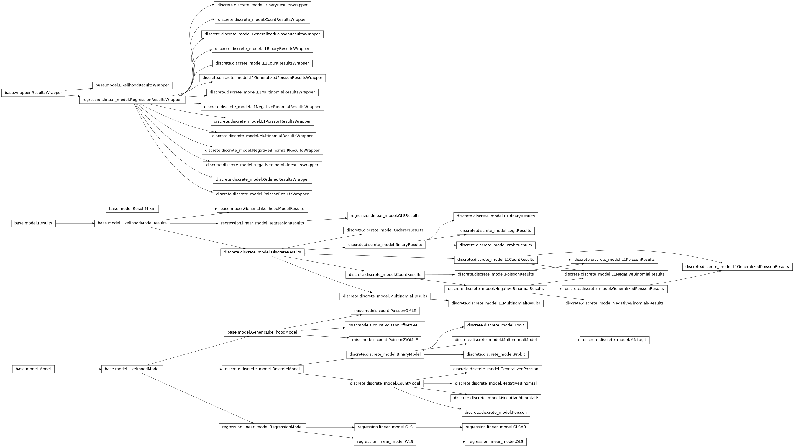
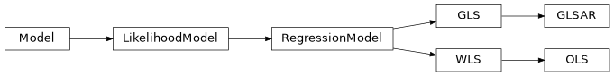
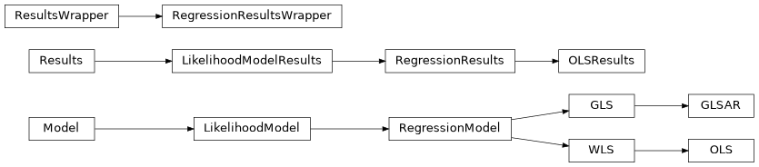
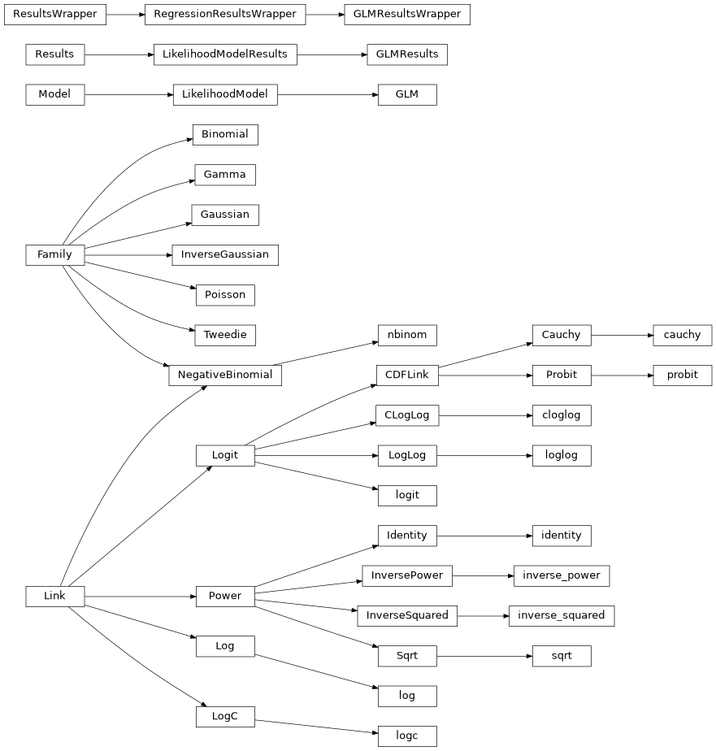
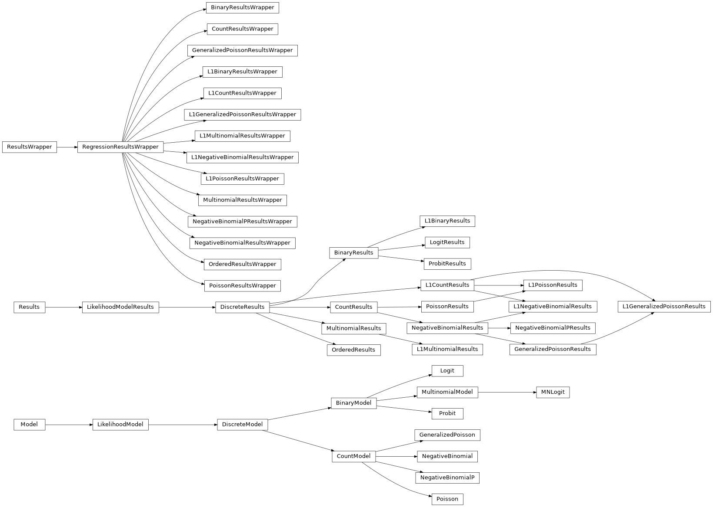
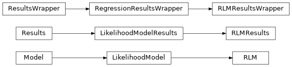
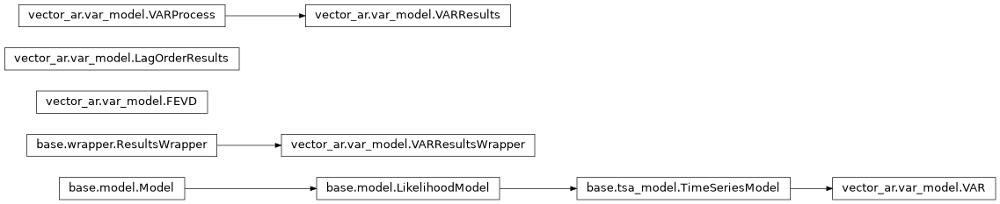

Internal Classes#
The following summarizes classes and functions that are not intended to be directly used, but of interest only for internal use or for a developer who wants to extend on existing model classes.
Module Reference#
Model and Results Classes#
These are the base classes for both the estimation models and the results. They are not directly useful, but layout the structure of the subclasses and define some common methods.
|
A (predictive) statistical model. |
|
Likelihood model is a subclass of Model. |
|
Allows the fitting of any likelihood function via maximum likelihood. |
|
Class to contain model results |
|
Class to contain results from likelihood models |
|
A results class for the discrete dependent variable models. |
|
Class for results of tests of linear restrictions on coefficients in a model. |


Linear Model#

Generalized Linear Model#

Discrete Model#

Robust Model#

Vector Autoregressive Model#
